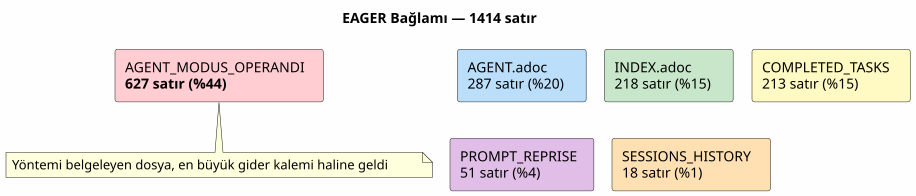
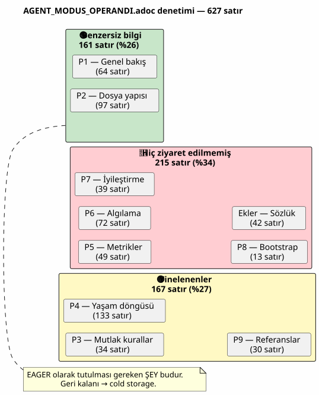
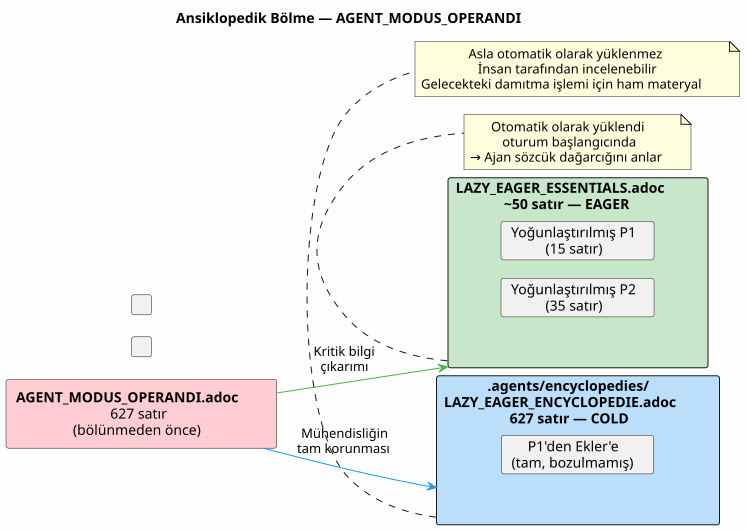
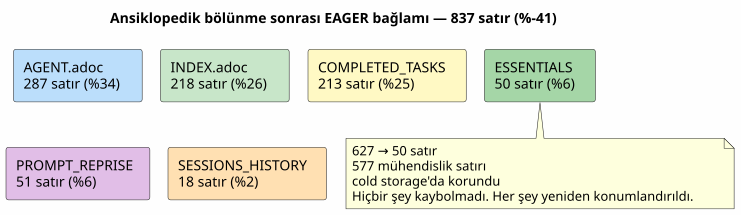
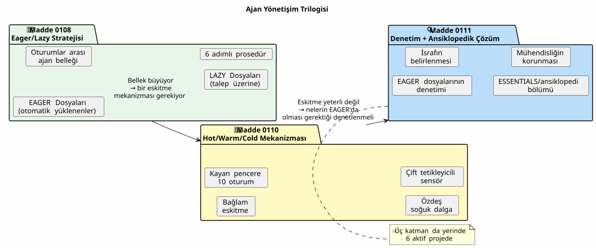
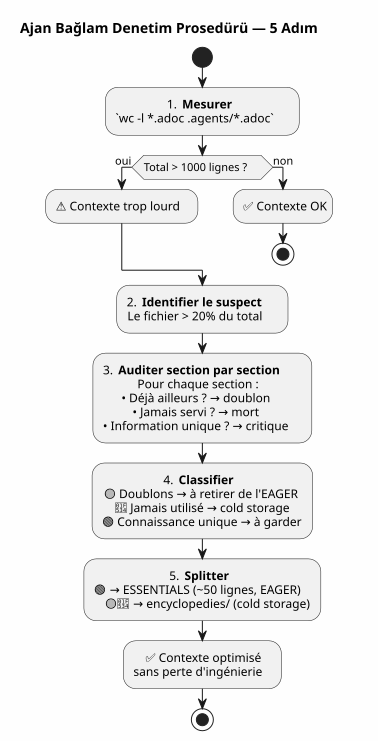
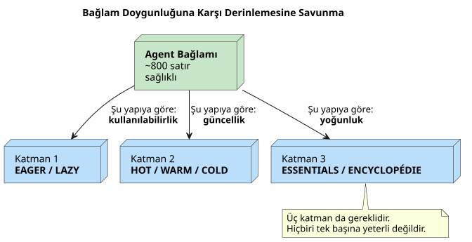

Agent Bağlam Denetimi: Kendi Yönetişiminiz Sorun Haline Geldiğinde — ve Hiçbir Şey Kaybetmeden Bunu Nasıl Düzelteceğiniz
Yayınlandı: 27 April 2026
- Sahne: oturum 051, bir şeyler ters gidiyor
- Denetim: 627 satırı detaylıca incelemek
- Mühendisliği kaybetme korkusu
- Çözüm: ansiklopedik bölünme
- ESSENTIALS dosyasının içeriği
- Sonuç: %50 daha az EAGER bağlamı
- Klasör neden
encyclopedies/olarak adlandırılmış? - Serinin mantıksal devamı
- Farklı yapmış olacağım şeyler
- Kendi bağlamınızı denetleme kılavuzu
- Canlı bir yönetişim
- Bağlantılar
Kusursuz bir ajan yönetişimi inşa etmek için haftalar harcadınız. Eager/Lazy, oturum sonlandırma prosedürü, rotasyonlu yedeklemeler. Sistem çalışıyor. Sonra bir gün, ajan yavaşlıyor. Yanıtlar seyreliyor. Ölçüm yapıyorsunuz: otomatik olarak yüklenen 1414 satır. Ve en kötüsü, suçlu ne kod, ne backlog ne de oturum arşivleri. Suçlu, yönteminizi belgeleyen dosyanın kendisi.
- içindekiler
-
[]
Sahne: oturum 051, bir şeyler ters gidiyor
30 Nisan 2026, 16:00. Şuradayım:`magic-stick`, canlı Linux ISO oluşturma projem. Opencode ajanı, her zamanki gibi Eager dosyalarımı otomatik olarak yükledi —AGENT.adoc, PROMPT_REPRISE.adoc, .agents/INDEX.adoc. Her şey normal.
Ancak yanıtlar etkisiz. Ajan, muhakeme etmek için iki saniye daha fazla harcıyor. Üç mesaj önce gözünün önünde olan bir detayı unutuyor. Bu bir çökme değil, bir hata değil; bu yavaş bir bozulma, hemen fark edilmeyecek türden.
Bunu daha önce 048. oturumda, yönetişim dosyalarının toplamda 5200 satır tuttuğunu keşfettiğimde yaşamıştım. O zamanlar, 10 oturumluk sliding window’u, özdeş soğuk dalgaları ve iki tetikleyicili sensörüyle Hot/Warm/Cold mekanizmasını kavramsallaştırmıştım. Sorun çözülmüştü. Teoride.
Ama şu an 051. oturumdayız. Yedekleme rotasyonu başarıyla gerçekleşti — EAGER dosyaları 2087 satırdan 500 satıra düştü. Yine de bağlam ağır kalmaya devam ediyor. Bir şeyler gözümden kaçıyor.
Bir terminal açıyorum ve şunu yazıyorum:
wc -l AGENT.adoc AGENT_MODUS_OPERANDI.adoc PROMPT_REPRISE.adoc \
.agents/INDEX.adoc .agents/SESSIONS_HISTORY.adoc \
.agents/archives/COMPLETED_TASKS_ARCHIVE_2026-04.adoc 287 AGENT.adoc
627 AGENT_MODUS_OPERANDI.adoc
51 PROMPT_REPRISE.adoc
218 .agents/INDEX.adoc
18 .agents/SESSIONS_HISTORY.adoc
213 .agents/archives/COMPLETED_TASKS_ARCHIVE_2026-04.adoc
1414 total1414 satır. Yedekleme rotasyonu INDEX, SESSIONS_HISTORY ve COMPLETED_TASKS tablolarını güzelce budadı — temizler. Ancak gözden kaçırdığım, görmezden gelinemeyecek kadar büyük bir sorun var:627 satırtek bir dosyada.`AGENT_MODUS_OPERANDI.adoc`Lütfen çevirmek istediğiniz metni sağlayın.
Bu dosya, Eager/Lazy stratejisini belgelemek için 1. oturumda yazdığım dosyadır. Yöntemin kılavuzudur. Ve tek başına, EAGER bağlamının %44’ü haline geldi.

İroni tam anlamıyla hakim. Bağlamı tasarruflu kullanmak için tasarlanan dosya, bağlamın temel tüketicisi haline geldi. Bu, arabanızın kullanım kılavuzunun motordan daha ağır olması gibi bir şey.
Denetim: 627 satırı detaylıca incelemek
Bölüm bölüm bir denetim yapmaya karar veriyorum. Silmek için değil — neyin EAGER içinde olmayı hak ettiğini ve neyin bilgi kaybı olmadan başka bir yerde yer alabileceğini anlamak için.
İşte şunun tam yapısı:`AGENT_MODUS_OPERANDI.adoc`ve orada bulduğum şey:
Bölüm |
Satırlar |
İçerik |
Halihazırda … içinde mevcut olan |
P1 — Genel Bakış |
64 |
Sorun çözüldü, temel ilkeler, gösterge paneli vs manuel analojisi |
Lütfen çevirmek istediğiniz metni sağlayın. |
P2 — Dosya Yapısı |
97 |
Dizin yapısı, yükleme politikası, neyin ne zaman yükleneceği |
Lütfen çevirmemi istediğiniz metni gönderin. |
P3 — Mutlak Kurallar |
34 |
Git yasak, yıkıcı komutlar yasak, sırlar yasak |
|
P4 — Oturum yaşam döngüsü |
133 |
Açılış şablonu, çalışma kuralları, oturum sonu 6 adımı, kontrol listesi |
|
P5 — Metrikler ve eşikler |
49 |
İdeal oturum (15-30 dk, 1-3 dosya), uyarı işaretleri |
Lütfen çevrilecek metni sağlayın. |
P6 — Oturum türleri |
72 |
Tespit tablosu, teklif formatı, istisnalar |
Lütfen çevrilmesini istediğiniz metni paylaşın. |
P7 — Sürekli İyileştirme |
39 |
Takip metrikleri, haftalık inceleme |
Lütfen çevrilmesini istediğiniz metni sağlayın. |
P8 — Başlangıç kontrol listesi |
13 |
Yeni proje oluşturma (Bootstrap) |
Profesyonel bir çevirmensiniz. Fransızca’dan Türkçe’ye çevirin.
TÜM ters tırnak kod alanlarını ( |
P9 — Referanslar |
30 |
Referans dosyaları, harici kaynaklar |
|
Ekler A+B |
42 |
Sözlük, versiyon geçmişi |
Lütfen çevrilecek metni sağlayın. |
Hüküm kesin:
-
Tam kopyalar(167 satır): P3, P4, P9 — her şey zaten şurada`AGENT.adoc` ou
INDEX.adoc, genellikle kelimesi kelimesine -
Pratikte hiç danışılmadı(215 satır): P5, P6, P7, P8, Ekler — hiçbir oturumda hiç kullanılmamış olan meta-yönetişimden
-
Benzersiz bilgi(161 satır): P1 ve P2 — LAZY/EAGER sözlüğü, analoji, yükleme politikası
627 satırda,382’si gürültüdür. Ve bu 382 satır her oturum başında yükleniyor, ajan tarafından tüketiliyor ve ben daha merhaba demeden dikkatini dağıtıyor.

Bu diyagram her şeyin anahtarıdır. Yinelenenler (sarı) tamamen gürültüdür; ajan bunları iki kez, iki farklı dosyada okur. Hiç ziyaret edilmeyenler (kırmızı) ölü dokümantasyondur; özenle yazılmış ancak hiç kullanılmamıştır. Yalnızca yeşil, ajanın başka hiçbir yerde bulamayacağı bilgileri içerir.
Mühendisliği kaybetme korkusu
Bu aşamada, kanıtlar gözümün önünde: azaltmalıyım`AGENT_MODUS_OPERANDI.adoc`. Ama tereddüt ediyorum.
Bu dosyayı elle yazdım. Her bölüm, gerçek bir oturumda öğrenilen bir dersin sonucudur. P3 kısmı bir…`rm -rf`kazara şunlar üzerinde`bakery-plugin`ve gerçek Firebase token’larına mal oldu. P4 kısmı, arşivlemeyi unuttuğum ve ipucunu kaybettiğim on beş oturumun sonucudur. 6 adımlık prosedür bir kitaptan çıkmadı; acıdan doğdu.
Bu bölümleri silmek, kendi mühendislik geçmişimi çöpe atmak olurdu. Onları ortaya çıkaran dersler, onları keşfettiğim oturumlar, bir daha asla yapmak istemediğim hatalar. Bu sadece metin değil; kristalleşmiş deneyimdir.
İşte çözüme rehberlik edecek olan ilkeyi formüle ettiğim yer:
Lütfen çevrilecek metni sağlayın. Asla silmeyin. Her zaman yeniden konumlandırın.Bilginin projeden yok olması gerekmiyor. Sadece gerekli olmadığında otomatik olarak yüklenmemesi gerekiyor. Lütfen çevrilecek metni sağlayın.
Çözüm: ansiklopedik bölünme
Önerdiğim model basit ve Vikipedi’nin büyüme şeklinden ilham alıyor: bir madde çok uzun olduğunda, onu kesmiyoruz — detaylı bir madde oluşturuyoruz ve ana maddede bir özet tutuyoruz.
İçin`AGENT_MODUS_OPERANDI.adoc`, şu sonucu verir:
-
Çıkarbenzersiz bilgi içeren 161 satırı (P1 + P2) yeni bir dosyaya`LAZY_EAGER_ESSENTIALS.adoc`— ~50 satıra sıkıştırılmış, kesinlikle EAGER
-
Yeniden Adlandır
AGENT_MODUS_OPERANDI.adocen.agents/encyclopedies/LAZY_EAGER_ENCYCLOPEDIE.adoc— 627 satırlık orijinal dosya, bozulmadan, cold storage’da saklanmış olarak -
Asla şarj etmeyinansiklopedi dosyasını otomatik olarak — bu dosya insan için, gelecekteki damıtma işlemi için, altı ay sonra daha iyi bir modelle çağıracağımız ajan için orada

İsim`encyclopedies/`rastgele değildir. Bir ansiklopedi, bir arşiv dosyası değildir; düzenlenmiş, başvurulabilir ancak taşınabilir olmayan bir bilgi koleksiyonudur. Encyclopédie Universalis metroda okunmaz. Kütüphanede tutulur ve belirli bir soru olduğunda oraya gidilir.
Bu klasörün rolü tam olarak budur: ajanın otomatik olarak dokunmadığı, yapılandırılmış, kapsamlı ve statik bir referans kütüphanesi.
ESSENTIALS dosyasının içeriği
Yeni dosyanın somut olarak görünümü şöyledir`LAZY_EAGER_ESSENTIALS.adoc`, P1 ve P2’den çıkarılmış ve sıkıştırılmış:
= Stratégie LAZY/EAGER — Principes Essentiels
[abstract]
Ce fichier définit la stratégie de gestion du contexte agent.
Chargé automatiquement (EAGER) en début de session.
== Principes
|===
| EAGER | LAZY
| Tableau de bord | Manuel du propriétaire
| Chargé automatiquement | Chargé sur demande
| <= 100 lignes, <= 10k tokens | Illimité, détaillé
| Règles absolues, mission courante | Archives, historique, références
|===
== Politique de Chargement
|===
| Fichier | Type | Quand charger
| PROMPT_REPRISE.adoc | EAGER | Début session (auto)
| *_ESSENTIALS.adoc | EAGER | Début session si EPIC active
| .agents/INDEX.adoc | EAGER | Début session (auto)
| *_REFERENCE.adoc | LAZY | Sur besoin (détails architecture)
| .agents/sessions/N-*.adoc | LAZY | Sur demande (détails session)
| .agents/encyclopedies/*.adoc | COLD | Jamais auto (humain seulement)
|===
== Comment l'Agent Sait Quoi Charger
Début session → PROMPT_REPRISE + INDEX + ESSENTIALS actifs.
Besoin de détails → charger les *_REFERENCE et sessions/ en LAZY.
Connaissance froide → encyclopedies/, jamais automatique.Elli satır. Ajanın mekaniği anlaması için ihtiyacı olan tek şey bu. Geri kalan her şey —ders geçmişi, ayrıntılı analojiler, adım adım prosedürler, ekler— ansiklopedide yer alıyor.
Ve en önemlisi:hiçbir şey silinmedi. 627 mühendislik satırı hâlâ orada, şurada`.agents/encyclopedies/LAZY_EAGER_ENCYCLOPEDIE.adoc`Sadece tezgah üzerinde değil, kütüphaneye kaldırılmış durumdalar.
Sonuç: %50 daha az EAGER bağlamı
Split öncesinde:
287 AGENT.adoc
627 AGENT_MODUS_OPERANDI.adoc
51 PROMPT_REPRISE.adoc
218 .agents/INDEX.adoc
18 .agents/SESSIONS_HISTORY.adoc
213 .agents/archives/COMPLETED_TASKS_ARCHIVE_2026-04.adoc
1414 totalSplit sonrası:
287 AGENT.adoc
50 LAZY_EAGER_ESSENTIALS.adoc ← remplace 627 lignes
51 PROMPT_REPRISE.adoc
218 .agents/INDEX.adoc
18 .agents/SESSIONS_HISTORY.adoc
213 .agents/archives/COMPLETED_TASKS_ARCHIVE_2026-04.adoc
837 total ← -41%
En büyük tüketici (AGENT_MODUS_OPERANDI, 627 satır), 50 satırlık bir dosya ile değiştirildi. Kazanç anlık: 577 satırlık bağlam alanı boşaldı. Ajan nefes alıyor.
Ve`.agents/encyclopedies/`, 627 satırlık orijinal dosya bekliyor. Bozulmamış halde. Tüm bölümleriyle birlikte — tekrarlar olanlar ve hiç kullanılmamış olanlar dahil. Çünkü bir gün, daha iyi bir model veya insan bir veri bilimcisi bu açıları, bu bilinçli tekrarları, bu öğrenilmiş dersleri karşılaştırmak isteyecektir. Ve o gün, ham madde orada olacaktır.
Klasör neden encyclopedies/ olarak adlandırılmış?
İsim seçimi kozmetik değildir. Mekanizmanın felsefesini kodlar.
Bir arşiv (archives/) kronolojik olarak düzenlenmiş tarihsel veriler içerir — aylık COMPLETED_TASKS gibi. Bir yedek (backup/) zaman damgalı bir snapshot’tır — geçmiş bir durumun yedek kopyasıdır.
Bir ansiklopedi ise bambaşkadır. Konulara göre yapılandırılmış, kapsamlı ancak doğrusal olmayan tematik bir bilgi koleksiyonudur. Bir ansiklopedi baştan sona okunmaz. Belirli bir soruyu yanıtlamak için içine dalınır.
Bu dosyanın kapsamı tam olarak şudur:
Dosya |
Rol |
Erişim |
Granülarite |
|
Geçmiş veriler (aylık tamamlanan görevler) |
TEMBEL, yapılandırılmış |
Kronolojik |
|
Soğuk snapshot’lar (10 oturumluk dalgalar) |
COLD, tam kopya |
Kronolojik |
|
Kapsamlı tematik bilgi (metodoloji, desenler) |
COLD, asla auto |
Tema |
Bu ayrım, her şeyin bir araya toplandığı karmaşayı önler. Her dosya, ne zaman oluşturulduğuna göre değil, ne içerdiğine göre nerede bulunması gerektiğini bilir.
Serinin mantıksal devamı
İlk iki makaleyi okuduysanız, işte üç parçanın birbirine nasıl geçtiği:

-
0108şuna yanıt verir: «İki oturum arasında ajana nasıl hafıza kazandırılır?
-
0110şuna yanıt verir: « Bu belleğin ajanı boğması nasıl engellenir?
-
0111şuna yanıt veriyor: « Ya sorun arşivlerin boyutu değil de, EAGER olarak neleri koymayı seçtiğimizse?
İlk makale yapıyı kurdu. İkincisi yaşlandırma mekanizmasını ekledi. Üçüncüsü içeriği denetliyor — ve metodolojinin kendisinin soruna dönüştüğünü keşfediyor.
Farklı yapmış olacağım şeyler
Geriye dönüp baktığımda, başlangıçtaki tasarım hatasını görüyorum.`AGENT_MODUS_OPERANDI.adoc`tek bir belge — bir manifesto — olarak oluşturuldu. Düşünceyi resmileştirmek için doğru yaklaşım buydu. Ancak düşünce resmileştikten sonra, belge derhal bölünmeliydi: temel kısımlar EAGER’a, kapsamlı olanlar ise cold’a.
Bunu yapmadım çünkü belgeyle gurur duyuyordum. Elle yazılmış, her bölümü bir oturum dersinin meyvesi olan 627 satırlık saf mühendislik. Bu benim eserimdi. Ve her yazar gibi, onu parçalara ayırmakta zorlandım.
Ders:bir belgenin iyi olması, otomatik olarak yüklenmesi gerektiği anlamına gelmezİçeriğin kalitesinin, ajanın anlık bağlamı için uygunluğuyla hiçbir ilgisi yoktur.
Bugün kural basit: EAGER bağlamındaki 100 satırdan fazla olan her belge şüphelidir. Bir denetimi hak eder. Bir mahkumiyeti değil — bir denetimi. Ve soru hiçbir zaman "silinmeli mi?" değil, "her oturumda yüklenmeli mi?"dir.
Kendi bağlamınızı denetleme kılavuzu
İlk iki makaleyi takip ettiyseniz ve kendi Eager/Lazy yönetişiminizi kurduysanız, işte beş adımlık bir denetim prosedürü:
-
ÖlçmekLütfen çevrilecek metni sağlayın.`wc -l`tüm EAGER dosyalarınızda. Toplam 1000 satırın altında olmalıdır.
-
En büyük olanı belirle: toplamın %20’sinden fazlasını oluşturan dosya bir numaralı şüphelidir.
-
Bölüm bölüm denetle: her bölüm için kendinize şu soruları sorun: «Bu bilgi zaten başka bir yerde var mı? Aracı bu bilgiyi başka bir dosyada okudu mu? Son 5 oturumda kullanıldı mı?
-
Sınıflandırıcı: kopya, hiç kullanılmadı, benzersiz bilgi.
-
Bölmek veya yeniden konumlandırmak: benzersiz ve kritik olanlar → sıkıştırılmış ESSENTIALS. Geri kalan her şey →`encyclopedies/`Lütfen çevrilecek metni sağlayın.

Bu işlem 15 dakika sürer. 50 oturumluk bir projede, gelecek her oturum için yüzlerce token tasarrufu sağlar. ROI anlıktır.
Canlı bir yönetişim
Bu üç makalelik serinin bana öğrettiği şey, ajan yönetişiminin bitmiş bir ürün olmadığıdır. Bu bircanlı organizma. Proje ile birlikte büyüyor. Büyüme sancıları çekiyor. Düzenli kontroller gerektiriyor.
-
oturum arşivlerin şiştiğini ortaya koydu. 051. oturum metodolojinin kendisinin şiştiğini ortaya koydu. 060. oturum muhtemelen başka bir şeyi ortaya çıkaracak. Bu normal. Bu sağlıklı. Kendini hiçbir zaman sorgulamayan bir yönetişim, ölü bir yönetişimdir.
Kurulan üç mekanizma — Eager/Lazy, Hot/Warm/Cold, split encyclopédique — bağlam doygunluğuna karşı derinlemesine bir savunma sistemi oluşturur. Hiçbiri tek başına yeterli değildir. Birlikte birbirlerini tamamlarlar:
-
İstekli/Tembelbilgiyi kullanılabilirliğe göre yapılandırır
-
Sıcak/Ilık/Soğukbilgiyi güncelliğe göre yapılandırır
-
Ansiklopedik denetimbilgiyi yoğunluğa göre yapılandırır

Bu üç katmanla birlikte, agent bağlamı üzerinden`magic-stick`2087 satırdan (tüm optimizasyonlardan önce) yaklaşık 800 satıra düştü — yani 2,6 kat azaldı. Tek bir dokümantasyon satırı, tek bir oturum arşivi veya öğrenilen tek bir ders kaybedilmeden.
Her şey burada. Sadece daha düzenli.
Bağlantılar
-
Madde 0108 — Eager/Lazy Stratejisi:Bir Yapay Zeka Ajanını AsciiDoc ile Yönetmek
-
Madde 0110 — Hot/Warm/Cold Mekanizması:Sliding Window ve Soğuk Hava Dalgası
-
Sitem: https://cheroliv.com
-
Proje`magic-stick`: https://github.com/cheroliv/magic-stick
Bilginin yok olmasına gerek yok. Sadece gerekli olmadığında yüklenmemesi yeterli.